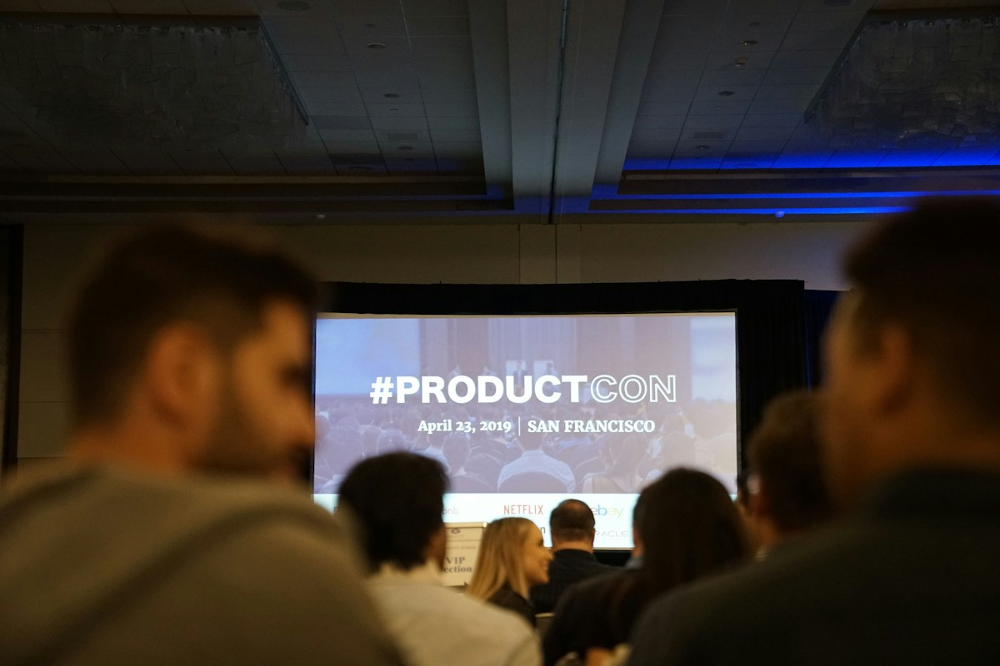
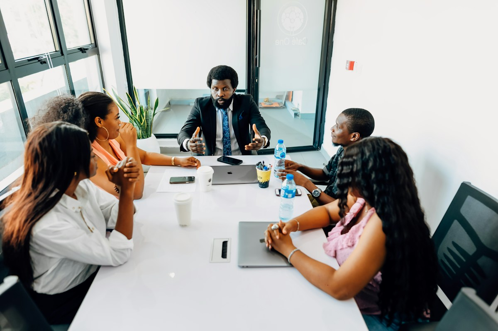
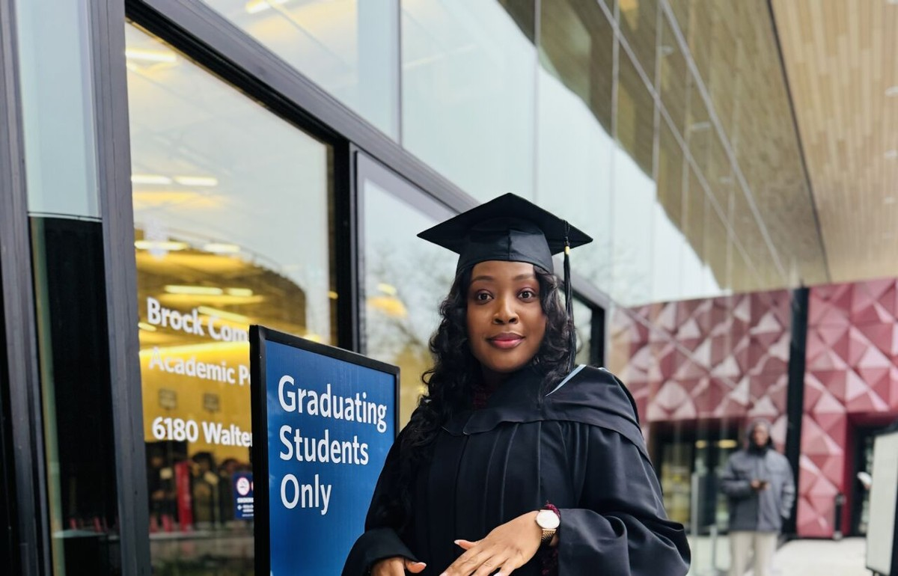

01 / Healthcare
Connecting people to better care.
Healthcare improvement work across primary care access, care navigation, cancer screening and community partnerships.
Anu Awotunde
Pharmacist.
Researcher.
Mentor.
A professional home
for meaningful work.
I bring people, evidence and systems together to improve healthcare and help others navigate their professional journeys.

01 / Introduction
I’m Anu, a pharmacist, healthcare project professional, researcher and mentor based in Canada.
From pharmacy practice in Nigeria to graduate research at UBC and healthcare improvement in Toronto, my work has followed a common thread: making complex systems work better for people.
About Anu ↗02 / Mentorship
Career growth can bring unfamiliar questions. I’m interested in supporting people as they build confidence, find clarity and explore their next professional step.
Mentorship arrangements are being developed.
03 / Selected areas of work
01 / Healthcare
Healthcare improvement work across primary care access, care navigation, cancer screening and community partnerships.
02 / Research
Graduate research at UBC exploring social and care networks among older adults, with work published in the Canadian Journal on Aging.
03 / Community
Youth engagement, leadership and community work, including experience with the United Nations Association in Canada.
04 / Speaking
I bring a multidisciplinary perspective to conversations about healthcare, leadership and professional growth.
Healthcare improvement & project management
Research, community health & equity
Mentorship, leadership & career transitions
Photography & story
Speaking, collaboration and learning deserve a place alongside the portraits. The labelled reference images suggest the types of photographs to add.

A stage, panel or workshop photograph of you would belong here.
Illustrative reference · Product School / Unsplash ↗
A photograph of you collaborating with colleagues or a community would belong here.
Illustrative reference · Ninthgrid / Unsplash ↗
A moment from your academic journey.
From your shared photographs05 / Get in touch